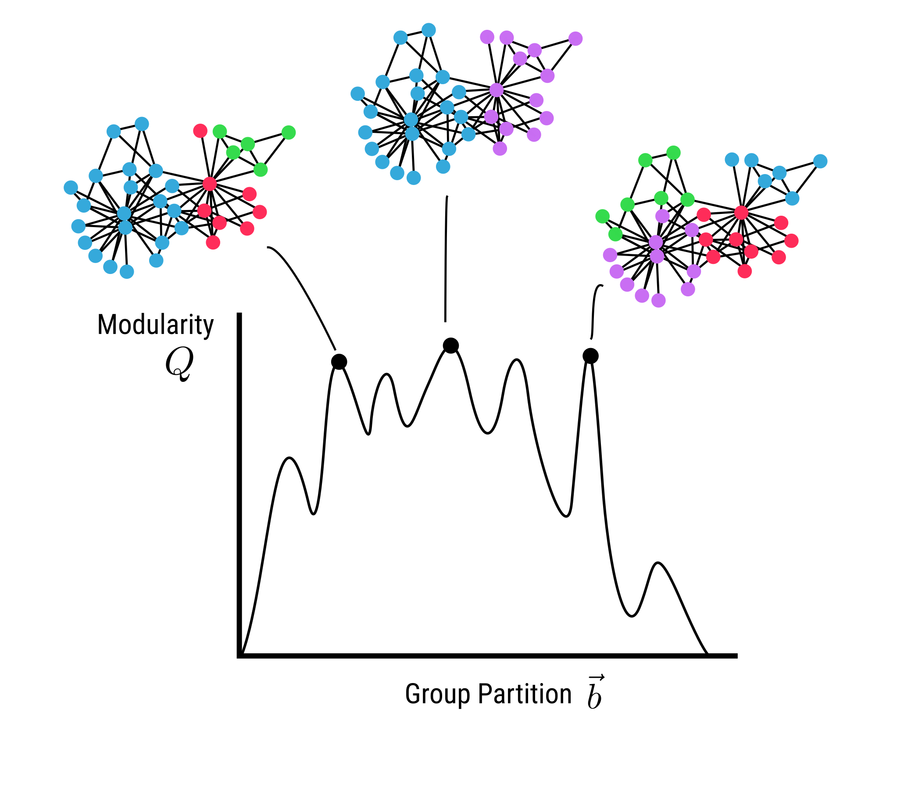
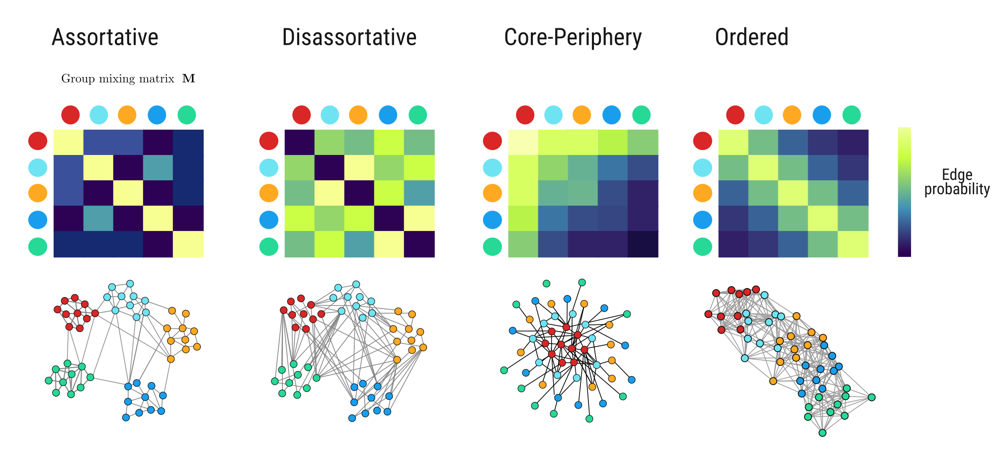

Network modularity is widely misused in ecological analyses
Michael D. Catchen ![]()
Stop using modularity maximization.
Introduction
Ecosystems are composed of interactions between species and their environment. These interactions form networks that enable the persistence of species, ecosystems, and the services ecosystems provide people. In the last few decades, network science has developed to understand networks across a variety of domains. This field has developed numerous quantitative tools for describing network structure, which have seen increasing adoption in ecosystem science in the burgeoning subfield of network ecology (Delmas et al. 2019). One such property is modularity (denoted Q), which is a metric that describes “how well” nodes of a network can be grouped into modules, first introduced in Newman and Girvan (2004). Modularity has been widely adopted as a metric of interest in ecological networks, and in principle the grouping of species into modules could contain biologically meaningful information.
Unfortunately, the most popular method identifying modules in ecological networks is Modularity Maximization (MM), which has many well documented flaws for robustly identifying modules in networks (Good, de Montjoye, and Clauset 2010; Fortunato and Barthélemy 2007; Lancichinetti and Fortunato 2011; Peixoto 2021).
As an alternative, we suggest methods for community detection based on Stochastic Block Models (Karrer and Newman 2011; Peixoto 2014; Yen and Larremore 2020) for identifying modules in ecological networks. Although they have seen some use in ecological networks (Allesina and Pascual 2009; Gauzens et al. 2013; O’Connor et al. 2020), modularity is still predominantly used in network ecology. In a brief literature survey, we found MM methods overwhelmingly prevelent in the analysis of ecological networks. Here we cover what modularity maximization is, and why it doesn’t work for identifying modules/groups in networks. We then provide a brief primer on stochastic block models.
What is modularity?
Consider an undirected network defined by an adjacency matrix \mathbf{A}, where A_{ij} = 1 if nodes i and j share an edge, and 0 otherwise. Let m = \sum_{i,j} A_{ij} denote the total number of edges in the network, and k_i be the degree (the number of edges) associated with node i. Let b_i denote the group (or module) that node i belongs to. Modularity (Q) is then defined as
Q = \frac{1}{2m} \sum_{i,j} \bigg( A_{ij} - \frac{k_i k_j}{2m}\bigg) \delta(b_i, b_j)
where \delta is a function that equals 1 if b_i = b_j, and equals 0 otherwise. It is essential to emphasize that modularity is not a property of a network alone. It is only defined for a network and a set of group assignments for each node, \vec{b}.
This value can be interpreted intuitively as how many more edges exist between members of the same group than would be expected if edges were distributed “at random”. As pointed out by Peixoto (2021), there is an implicit null model in what “at random” means in this definition, namely the Chung-Lu configuration model (Chung and Lu 2002), where the probability of an edge existing between nodes i and j is \mathbb{E}[A_{ij}] = \frac{k_i k_j}{2m}.
What is modularity maximization?
Modularity maximization (MM) is one of many potential methods for the problem of taking an observed network \mathbf{A} and infering which group b_i each node i belongs to, and how many total groups |\vec{b}| there are total (in network science literature, this problem is called community detection). MM originated during the mid-2000s (Newman and Girvan 2004) and was popularized through the efficeincy of the Clauset-Newman-Moore (CNM) algorithm (Clauset, Newman, and Moore 2004) and the Louvain algorithm (Blondel et al. 2008), both of which made implementation of MM feasible for very large networks (at the time, hundreds or thousands of nodes). Six years later after its proposal, Good, de Montjoye, and Clauset (2010) (with Clauset, architect of CNM, as senior author) showed that in practice communities identified via modularity maximization are fataly flawed for all but idealized networks, and advocated against its use in “in all but the most straightforward cases”. More recently, Peixoto (2021) more thoroughly explores this issue, showing how MM can massively overfit and find highly modular partitions (Q \approx 0.5) in networks with no modular structure.
Why doesn’t modularity maximization work?
As pointed out by Peixoto (2021), modularity maximization fails on two fronts: it simultaneously overfits (by finding clusters that have high modularity Q but are entirely sporatic and unrelated to the mechanisms by which the network was generated) and underfits (by having a limit on the size of what communities are recoverable relative to the size of the whole network, called the resolution limit (Fortunato and Barthélemy 2007)).
Overfitting via a poor choice of objective function
The first issue with modularity maximization is the the modularity function Q has many local optima, with similar values of Q, but which correspond to qualitatively very different partitions \vec{b}. This was first reported in Good, de Montjoye, and Clauset (2010), who also show that Q_{max} is highly dependent on the number of clusters and the size of the network, and conclude—“[the] modules identified through modularity maximization should be treated with caution in all but the most straightforward cases” (Good, de Montjoye, and Clauset 2010).

Underfitting via the resolution limit
The second issue with modularity maximization is that is cannot identify communities that at smaller than a certain size. The threshold for smallest community identifiable via MM is a function of the total size over the network, and called the “resolution limit” in the network science literature (Fortunato and Barthélemy 2007; Lancichinetti and Fortunato 2011).
Modularity maximization is rampant in ecological network studies
We found in a survey of 50+ papers on ecological networks, modularity maximization is extremely common as the method for finding communities. The goal of this paper is not to shame or call-out specific papers, but to highlight that a widely adopted practice has fundemental flaws, and to advocate a principle alternative for community detection.
We suspect MM is so prolific because it is widely available in many packages for network analysis, including bipartite, which uses a method for modularity maximization for bipartite networks proposed by Dormann and Strauss (2014), and the very popular libraries igraph and networkx. Another widely applied method is from Guimerà and Nunes Amaral (2005), which uses simulated annealing for MM. The prolific availability of software to run MM-based community detection leads researchers down the “path of least resistance”.
What instead of modularity maximization?
The state-of-the-art for community detection in networks are using a family of models called Stochastic Block Models (SBMs). Although the initial idea dates back several decades (Holland, Laskey, and Leinhardt 1983), modern research into using SBMs for community detection was spurred by regonition of the flaws with modularity maxmization (Good, de Montjoye, and Clauset 2010). SBMs have several advantages over modularity maximization. SBM inference is naturally posed as a Bayesian inference problem (Hofman and Wiggins 2008), which allows us to explicitly account for uncertainty in our estimate of the best node partition \vec{b}. Further, hierarchical SBMs (Peixoto 2014), where each block is itself an SBM, enables multi-scale community detection.
What is a stochastic block model?
SBMs are a probabilistic generative model. This means for a fixed set of input parameters, SBMs can be sampled to produce different possible realizations of networks from the distribution of possible networks given the input parameters. In their simplest form, SBMs take a partition of the nodes into a groups \vec{b}, and a mixing or block matrix \mathbf{M}, where \mathbf{M}_{b_i,b_j} is the probablity of an edge existing between nodes in groups b_i and b_j respectively.
This enables much more flexability in the types of community structure exist in networks. Modularity maximization can only capture one type of community structure—assortative communities, where links within communities are more common that those between communities. In contrast, community structure in networks can take on a variety of different forms: assortative, disassortative (where between group edges are more likely than within group), core-periphery (where a set of densely connected nodes form a ‘core’, and other ‘periphery’ nodes that have few edges and tend to be attached to core nodes ), and ordered (like trophic levels in a food-web).

How do we infer community structure from stochastic block models?
We can use Markov Chain Monte Carlo (MCMC) sampler to take an observed matrix A and obtain an estimate of the posterior distribution of the mixing matrix and group assignments, P(\mathbf{M}, \vec{b} | \mathbf{A}). To do this, we need to define the likelihood of observing some network \mathbf{A} from a given community partition \vec{b}, and mixing matrix \mathbf{M}. There are differences in the best way to define both likelihood and priors depending on underlying assumptions about network structure.
For unipartite networks, a common version is the Degree-Corrected SBM (DC-SBM, Karrer and Newman 2011), which explicitly accounts for the degree distribution by including the empirical degree sequence in the likelihood of observing each graph. Yen and Larremore (2020) develops a model specifically for bipartite networks, where the bipartite structure is directly incorporated into the generative model, improving performance for detecting communities in bipartite networks. Another promising line of research is hierarchical/nested SBMs (NSBMs), first proposed by Peixoto (2014). In NSBMs, each “block” \mathbf{M}_{b_i b_j} is itself another SBM. This enables multi-scale community detection that can circumvent the issue of resolution limits from modularity maximization. Modern methods include the microcanonical version of both the DC-SBM and NSBM (Peixoto 2017). Here microcanonical is terminology being adopted from statistical mechanics, and in practice means these models are defined for networks with a fixed degree sequence. For a thorough review of block modeling, see Lee and Wilkinson (2019).
Conclusion
In summary, community detection is great, but modularity maximization is useless. There are times when modularity, as a method of quantifying the assortativity of edges in a graph given a set of group assignments \vec{b}, could correspond to an interesting ecological question. However, using modularity as the criteria to select the group assignments is too unreliable to be the basis ecological conclusions. As an alterative, we should use stochastic block models to infer the structure of modules within ecological networks.